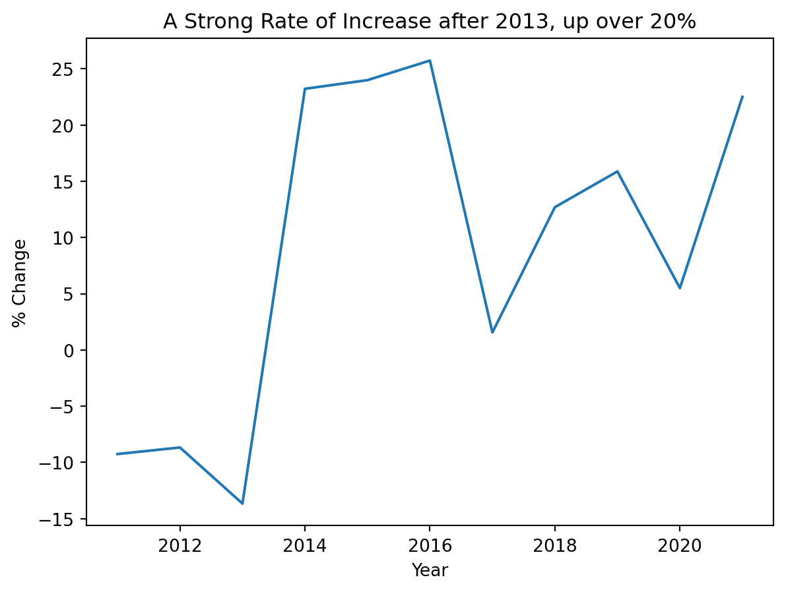

import pandas as pd
import numpy as np
from plotnine import *
import matplotlib.pyplot as plt
import seaborn as sns
import statsmodels.api as smDemonstrating Quarto for GitHub READMEs
Aim
Considering the controvery surrounding the housing crisis in Ireland, I wanted to examine recent housing data in Ireland, aiming to understand potential contributory factors towards the increase in price.
With a dataset of Irish housing transactions (2010-2021) Source: Kaggle (https://www.kaggle.com/datasets/erinkhoo/property-price-register-ireland)
prop = pd.read_excel('C:/Users/lehb1/Downloads/Prop_Price.xlsx')
prop.columns = [col.lower() for col in prop.columns]Question 1: How have the prices of new housing units increased?
#analyzing new houses
prop1 = prop[prop['property_desc'] == 'New Dwelling house /Apartment'].reset_index(drop=True)
#converting columns for ease
prop1['sale_date'] = prop1['sale_date'].values.astype('datetime64[D]')
prop1['year'] = prop1['sale_date'].dt.year
prop1['month'] = prop1['sale_date'].dt.month
prop1['day'] = prop1['sale_date'].dt.day
prop1['postal_code'].describe()
#creating a new DF for time series
p1 = pd.DataFrame()
p1.index.name = 'years'
pct_price = prop1['sale_price'].groupby(prop1['year']).mean()
p1 = pd.concat([p1, pct_price], axis=1)
p1 = p1.rename(columns = {'index':'year'})
p1['YoY Increase'] = pct_price.pct_change()*100
y = p1['YoY Increase']
y.plot()
plt.title('A Strong Rate of Increase after 2013, up over 20%')
plt.xlabel('Year')
plt.ylabel('% Change')
plt.show()
Question 2: Looking at Dublin, how have the prices overall (new and pre-existing units) increased?
prop2 = prop.copy()
prop2 = prop2[prop2['county'] == 'Dublin']
p2 = pd.DataFrame()
p2.index.name = 'years'
prop2['year'] = prop2['sale_date'].dt.year
prop2['month'] = prop2['sale_date'].dt.month
prop2['day'] = prop2['sale_date'].dt.day
dub_price = prop2['sale_price'].groupby(prop2['year']).mean()
p2 = pd.concat([p2, dub_price], axis=1)
p2 = p2.rename(columns = {'index':'years'})
p2['Mean-Annual-Price'] = dub_price
y1 = p2['Mean-Annual-Price']
y1.plot()
plt.title('Dublin Mean Property Prices 2010-2021')
plt.xlabel('Year')
plt.ylabel('Property Price')
plt.show()
Question 3: Are there any areas in Dublin that are driving this significant increase in price?
prop3 = prop.copy()
prop3 = prop[prop['postal_code'].notna()]
prop3.describe(include='all')
#regex expression to extract the post code from postal code
prop3['post_code'] = prop3['postal_code'].str.extract('(\d+)')
prop2['log_sale_price'] = np.log(prop3['sale_price'])
prop3_asc = prop3[prop3['post_code'].notna()]
prop3_asc = prop3.sort_values(by='post_code')
prop3_asc['log_sale_price'] = np.log(prop3['sale_price'])
prop3_asc
prop3_asc.boxplot(column='log_sale_price', by='post_code', figsize=(8,6), showfliers=False)
plt.ylabel('log_price (in euros)')
plt.show()
Considering the results, we can see that Ballsbridge/Donnybrook (D4), Rathmines/Ranelagh (D6), and Dundrum/Churchtown (D14) have the highest prices, with D4 and D6 outliers significantly higher than others.
Question 4: Are these houses being sold above market value? If so, why?
prop4 = prop.copy()
#need to explode the desc column
prop4_updated = prop4[prop4['property_size_desc'].notna()]
drops = []
#removing rows reflecting irish language
for index, row in prop4_updated.iterrows():
check = row['property_size_desc']
cleaned = check.encode('ascii', 'ignore').decode('ascii')
if check != cleaned or '?' in check:
drops.append(index)
if drops:
prop4_updated = prop4_updated.drop(drops)
#prop3_updated.drop_duplicates(subset=['property_size_desc'])
prop4_encoded = pd.get_dummies(prop4_updated, columns=['property_size_desc'])
prop4_encoded['post_code'] = prop4['postal_code'].str.extract('(\d+)')
y = prop4_encoded['if_market_price']
X = prop4_encoded[['property_size_desc_greater than 125 sq metres', 'property_size_desc_greater than or equal to 125 sq metres', 'property_size_desc_greater than or equal to 38 sq metres and less than 125 sq metres', 'property_size_desc_less than 38 sq metres']]
m1 = sm.OLS(y, X)
results = m1.fit()
print(results.summary()) OLS Regression Results
==============================================================================
Dep. Variable: if_market_price R-squared: 0.002
Model: OLS Adj. R-squared: 0.002
Method: Least Squares F-statistic: 28.03
Date: Wed, 03 Dec 2025 Prob (F-statistic): 4.22e-18
Time: 21:14:58 Log-Likelihood: 20333.
No. Observations: 52789 AIC: -4.066e+04
Df Residuals: 52785 BIC: -4.062e+04
Df Model: 3
Covariance Type: nonrobust
========================================================================================================================================================
coef std err t P>|t| [0.025 0.975]
--------------------------------------------------------------------------------------------------------------------------------------------------------
property_size_desc_greater than 125 sq metres 0.0153 0.002 7.703 0.000 0.011 0.019
property_size_desc_greater than or equal to 125 sq metres 0.0174 0.002 7.165 0.000 0.013 0.022
property_size_desc_greater than or equal to 38 sq metres and less than 125 sq metres 0.0319 0.001 37.795 0.000 0.030 0.034
property_size_desc_less than 38 sq metres 0.0230 0.003 7.974 0.000 0.017 0.029
==============================================================================
Omnibus: 56093.274 Durbin-Watson: 1.376
Prob(Omnibus): 0.000 Jarque-Bera (JB): 2366160.275
Skew: 5.717 Prob(JB): 0.00
Kurtosis: 33.741 Cond. No. 3.42
==============================================================================
Notes:
[1] Standard Errors assume that the covariance matrix of the errors is correctly specified.Unfortunately, our available features for analyzing these residences is limited to their size, so we can only regress on sq metres. Based on the above regression, while the p-values do show some significance, the R^2 value (0.01) indicates that this regression (looking at property size) cannot predict whether a property is sold for above market price. Looking forward, I would like to analyze the features of these housing units, and more in-depth data on Dublin to determine contributory factors towards the heightened housing costs.